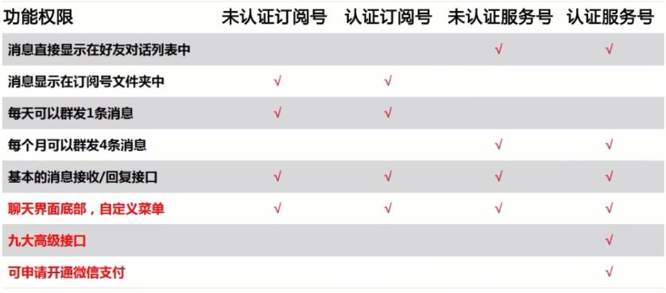
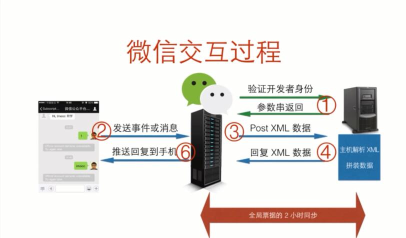
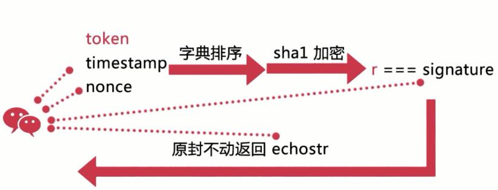

微信公众号开发
微信号的分类
- 企业号
不太适合与我们这种个人小型开发,是企业或组织提供移动应用入口，帮助企业建立与员工、上下游供应链及企业应用间的联系
- 订阅号
比较适合与个人、小团队，主要是用于信息传播，帮助管理用户以及和用户互动。
比如撰写文章，咨询传播，消息定制等等 - 服务号
企业和组织，提供更强大的业务服务与用户管理能力，比如
支付，智能接口
举个栗子
| 公众号 | 描述 |
|---|---|
订阅号 | 管理一个班级，一个学院的信息订阅，通知和互动 |
服务号 | 管理全学校的水果商店或者打印店,可以直接支付送货上门,及时推送一些特价水果 |
企业号 | 管理全学校所有学院，团委，学生处各个部门上班人员的考勤，活动进程等,例如OA系统 |
公众号的权限
公众号分为非认证和认证,认证的一般是需要你有一个开户过的企业

订阅号和服务号三点不同
- 出现位置不同
- 单月发送消息数量不同，订阅号可以一天1篇，服务号一个月最多4篇
- 订阅号没有9大接口和支付功能
服务号的9大接口
- 语音识别
- 客服接口
- OAuth2.0网页授权
- 生成带参数二维码
- 获取用户地理位置
- 获取用户基本信息
- 获取关注者列表
- 用户分组接口
- 上传下载多媒体文件
订阅号的5大接口
- 会话界面的自定义菜单
- 多客服接口，提供贴心快捷的客服服务
- 获取用户地址位置，精确提供服务
- 高级群发接口，实现更灵活的群发功能
- 用户分组接口，方便管理用户
微信的交互流程

开发必备
代理服务器的使用
- 使用localtunnel这个npm模块
- 需要支付6元的
花生壳内网映射 - 免费的natpp内网映射
配置接入微信公众号
- 测试号的配置
- 验证公众号
- 将token、timestamp、nonce三个参数进行
字典序排序 - 将三个参数字符串拼成一个字符串进行
sha1加密 - 将加密后的字符串与
signature对比，如果相同，表示这个请求来源与微信，我们直接原样返会echostr参数内容，接入验证成功了
- 将token、timestamp、nonce三个参数进行
- 获取access_token(全局票据)
- access_token每2个小时自动失效，需要重新获取
- 只更新了access_token，之前的那个就不能用了
微信js-SDK
微信公众号引入网页的步骤
- 绑定域名
- 引入js文件
- JS SDK初始化
SDK与公众号的区别
- 公众号
是微信这个原生的应用中，开放的特殊账号，让很多人可以通过原生的聊天界面，与公众号互动，其实就是我们与服务器互动
- 微信的SDK
不是公众号中使用的，而是在微信内置的浏览器中使用的
SDK的作用
形象的说：搭建了一座桥，使我们可以在微信内置的浏览器的网页中调用微信的原生应用，以及实现拍照、语音、及扫一扫等功能
SDK接口列表
- 基础接口
判断当前微信客户端版本是否支持指定js接口,有了这个判断，你就可以大胆的在网页中使用
温馨提示：即便是这个网页不在微信的浏览器中打开比如在电脑的浏览器打开，可以保证一些基础功能的可用性，只需要关掉跟微信 有关的功能就行，可以让这个网页不可访问，替换成一个二维码让用户来扫，也可以进入微信的环境中，算是一个折衷的方案 - 分享接口
- 图像接口
- 音频接口
- 智能接口
- 设备接口
- 地理位置
- 摇一摇周边
- 界面操作
- 微信扫一扫
- 小店
- 卡劵
支付
获取
jsapi_ticket
参考文档与资料：
微信公众号:https://mp.weixin.qq.com/wiki
微信SDK:https://mp.weixin.qq.com/wiki
github项目参考:https://github.com/zhangyapeng0222/weixin